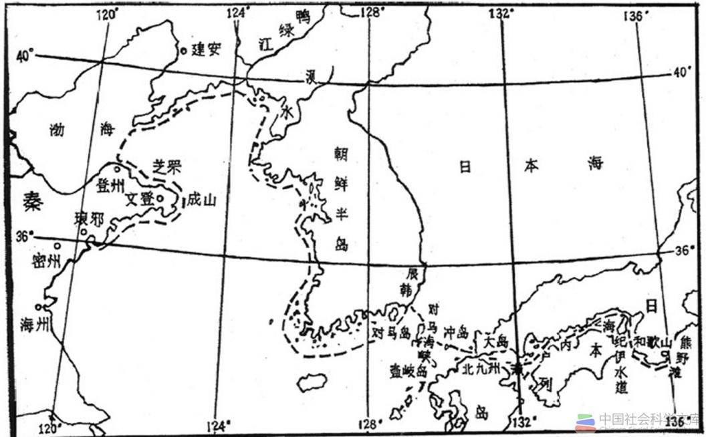

（一）东南沿海航路之畅通
西汉初，我国东南沿海的东瓯，闽越、南越等地方性小国相互攻掠，使航路不靖。建元三年（公元前138年）秋七月，闽越进击东瓯，东瓯向西汉求援。 汉武帝即遣楼船将军严助持节发会稽兵“浮海救东瓯”。闽越闻讯，即引兵撤退。西汉王朝直辖东瓯地区，江浙海路为之畅通。
元鼎四年（公元前113年），汉武帝对南越恩威井施，诱其归顺，但因南越相吕嘉作梗未遂。次年秋，汉武帝出动五路水师，聚攻南越。
闽越王乘机向北扩张，占据了东瓯王的地盘。三年后，建元六年（前135），闽越国转而向南进攻南越（岭南地区）。汉武帝再次派兵来救，闽越王郢被其弟余善所杀。 武帝立无诸之孙丑为越繇王，闽越国亡。余善杀郢之后，自立为王，武帝遂封余善为东越王，以牵制越繇王。到汉元鼎六年（前111），因南越反叛，汉朝派兵攻灭南越国。 余善起初率兵八千随攻南越，听说汉军将领杨仆有意讨伐东越，便先发制人，攻打汉军，称帝自立，公开反叛朝廷。武帝引兵讨伐东越。元封元年（前110），余善被杀，东越国亡。 随后，汉朝“诏军吏皆将其民徙处江淮间，东越地遂虚”。
出自《中国考古学百年史：1921—2021 第四卷》的广州南越王墓出土的莲瓣纹碗和玻璃碗
远在山东的齐相卜式也上书“请父子与齐习船者往死南越”这年冬天，楼船将军杨仆并伏波将军路博德会攻番禺，南越吿平，汉武帝“遂以其地为南海（今广东省南海县）、 苍梧（今广西苍梧县）、郁林（今广西贵县）、合浦（今广西合浦县〉、交趾（今越南北部）、九真（今越南清化）、日南（今越南义安）、珠崖（今海南省的琼山县）、 億耳（今海南省億县）九郡”。至此，南部疆域归辖西汉中央政府。素有“珠巩、犀、玳瑁、果布之凑”的番禺及徐闻、合浦、日南等，成为南方主要海港，南海远洋航行与海外贸易，走上坦途。 闽越虽臣服西汉，但“贡酎之奉不输大内，一卒之用不给上事，而欲招会稽之地，以践勾践之迹”公元前135年，闽越由南越王余善与越繇王繇君丑分治，但实权尽操于前者之手。 西汉平定南越后，余善反叛，发兵攻汉。汉武帝顺势利导，即遣横海将军韩说出句章（今浙江省宁波市），浮海从东方往：楼船将军杨仆岀武林，中尉王温舒出梅岭，以越侯为戈船、 下瀨将军出若邪（今浙江省绍兴市｝白沙，以击东越。当年冬，汉兵入东越境，余善被杀，余众皆降。汉武帝乃诏诸将悉其民徙于江淮之间，由是，东越地虚，闽越统一于中国，东南沿海船路悉通。
（二）北方沿海航路之畅通
汉武帝在打通南方沿海后，随即把视线转向北方海区，排除来自朝鲜半岛方面的海上于扰。西汉前期，卫氏朝鲜为外臣，受辽东太守节制。 传至右渠时，却与汉朝背盟断约，攻杀辽东地方官吏，破坏朝鲜半岛上其它小国与西汉的海上交通，使渤海与黄海北部的航行为之阻断。
元封二年（公元前109年）秋，汉武帝遣楼船将军杨仆率兵五万，从山东渡渤海，希黄海北岸与东岸，取水路直攻王险城。
经过一年左右的围攻与外交攻势，公元前108年夏，朝鲜右渠王被主和的臣属杀害，王险城终于被攻陷，卫氏朝鲜灭亡。
出自《帆都记忆：青岛六千年海洋文明简史》
卫氏朝鲜发生内辽，右渠被刺杀，战事结束。西汉政府即在朝鲜半岛设置乐浪（今朝鲜平安南道、黄海南道、江原道和咸镜南道地）、 临屯（今朝鲜咸镜南道大部分及北江原道北部）、玄菟（今朝鲜咸镜道至辽宁东部一带）与真番（今朝鲜黄海北道大部分、黄海南道及京畿道北部）四郡，直属汉朝管辖。 从此，北方海区的航路畅通无阻，极大地推动了中国与朝鲜半岛、日本列岛之间的航海活动。同时，也使整个中国沿海地区的南北航路连成一线，促使古代航海事业稳步走向大发展的新时期。